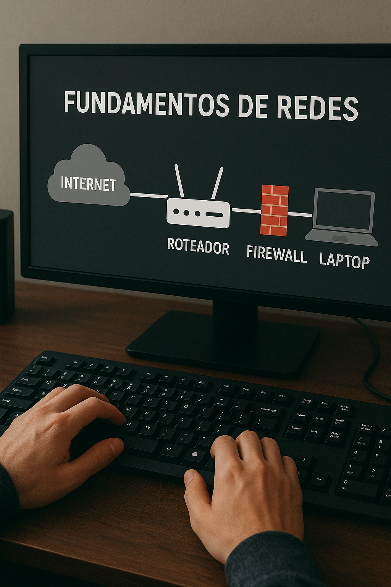
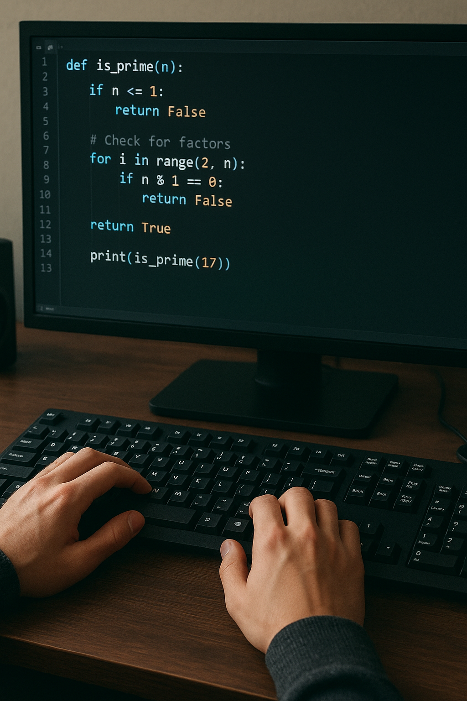
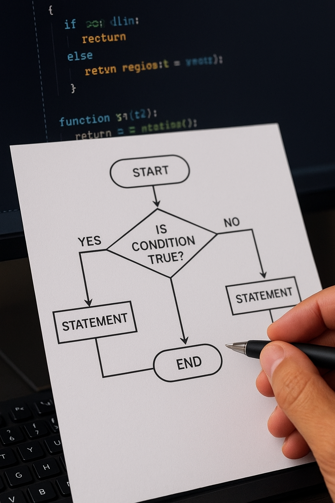

➤ Fundamentos de Eletrônica
➤ Fundamentos de Rede
➤ Tecnologia da Informação
➤ Lógica de Programação
➤ Lógica de Computação
Transformando Ideias em Código
Desenvolvimento de sites, sistemas e soluções digitais sob medida para você e sua empresa.
Trabalhamos com:
Tecnologia da Informação
Tecnologia da Informação (TI) é a área que utiliza computadores, softwares e redes para armazenar, processar e compartilhar informações. Ela é essencial para a comunicação, automação e inovação em diversos setores da sociedade.
Fundamentos de Rede
Fundamentos de Rede são os conceitos básicos que explicam como computadores e dispositivos se conectam e trocam informações. Envolvem noções de protocolos, endereços IP, tipos de redes e equipamentos de comunicação.
Lógica Computacional
Lógica Computacional é a base do raciocínio usado para criar algoritmos e resolver problemas com o auxílio do computador. Ela organiza ideias em passos lógicos que a máquina consegue entender e executar.
Lógica de Programação
Lógica de Programação é a forma de organizar o raciocínio para criar programas de computador. Ela transforma ideias em passos claros que podem ser escritos em código.
Fundamentos de Eletrônica

Fundamentos de Eletrônica é o estudo dos princípios básicos da eletricidade e dos componentes eletrônicos. Ele ensina como funcionam e se conectam resistores, capacitores, diodos, transistores e circuitos.